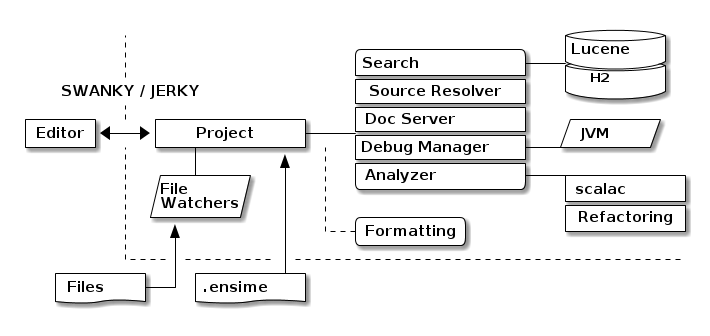

Avec un peu d'Emacs dedans !
[ ] Intellij[ ] Eclipse[ ] Ensime[ ] Autre ?
…
Installer le plugin sbt
// ./.sbt/1.0/plugins/plugins.sbt addSbtPlugin("org.ensime" % "sbt-ensime" % "2.1.0")
Générer une configuration par projet
% sbt ensimeConfig
M-x list-packages)M-x ensime)
C-h t Tutoriel intégréhelm packageM-x For the win ! C-g when you lose !% sbt ensimeConfigProject % sbt ensimeServerIndex % sbt ensimeSnapshot % sbt ensimeRestore
[warn] You have a different version of scala for ENSIME (2.12.4) and hello-world-template (2.12.3). [warn] If this is not what you intended, try fixing your build with: [warn] scalaVersion in ThisBuild := "2.12.3" [warn] in your build.sbt, or override the ENSIME scala version with: [warn] ensimeScalaVersion in ThisBuild := "2.12.3" [warn] in a ensime.sbt: http://ensime.org/build_tools/sbt/#customise
https://jpthomasset.github.io/slug-meetup-ensime/
Made with ♥ using Emacs (org-mode)